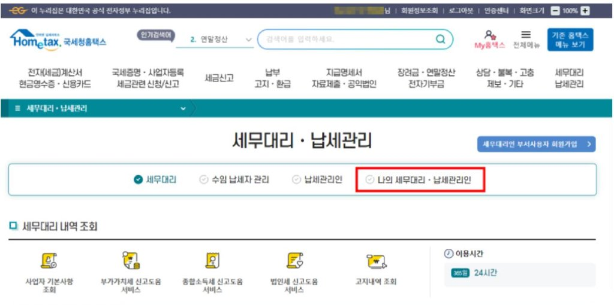
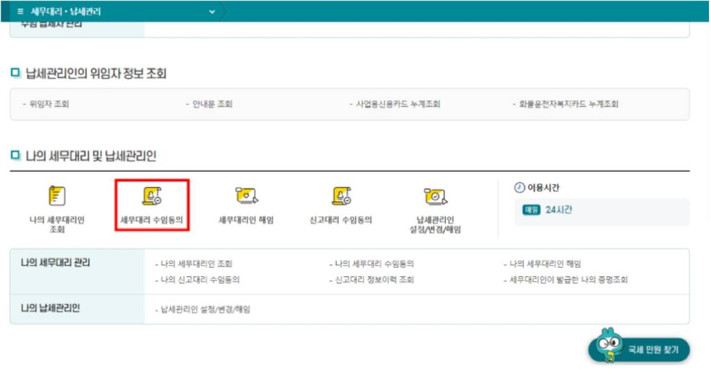
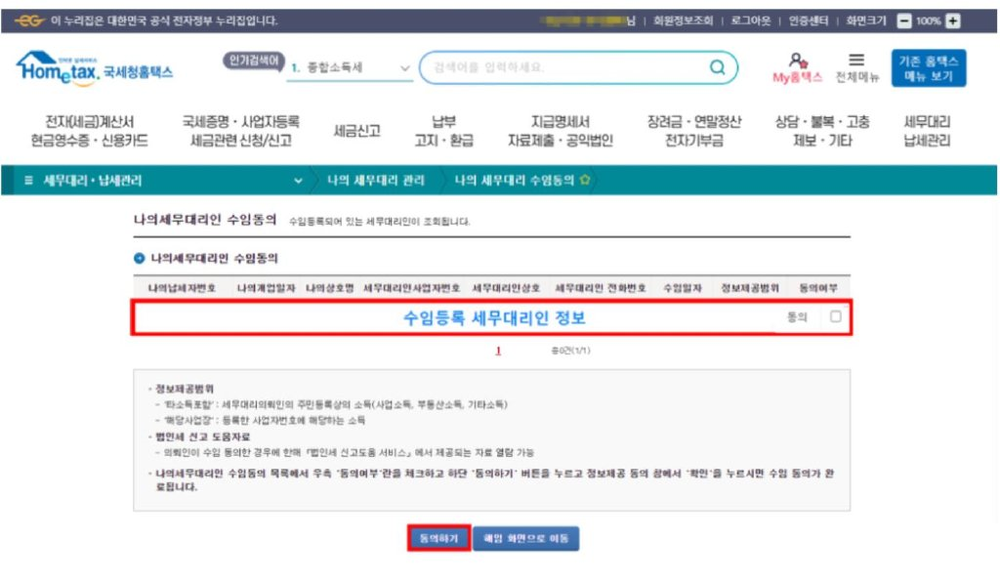
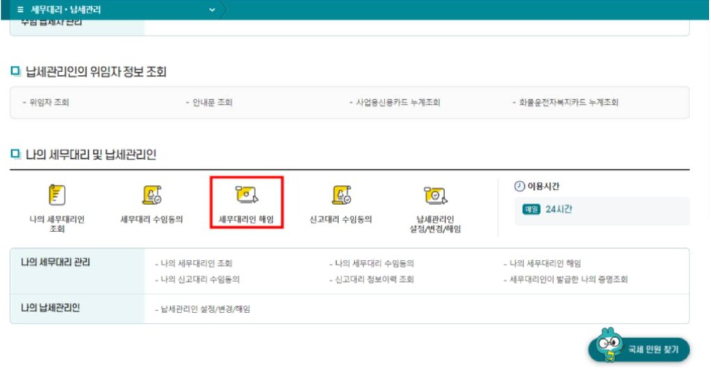
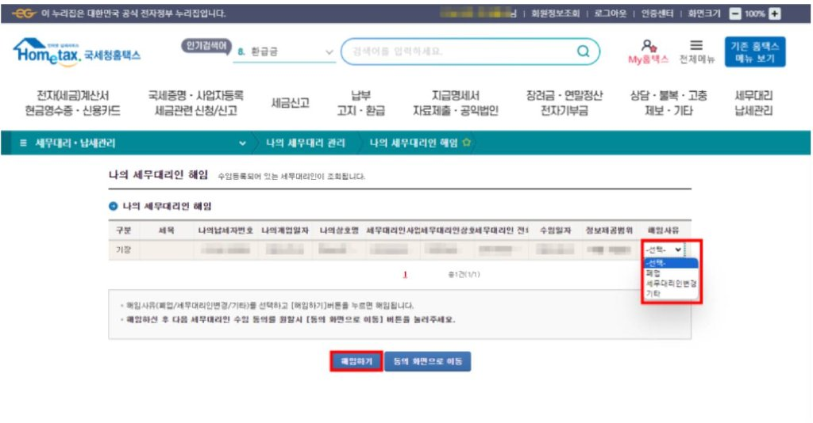

韓国ホームタックスの「受任同意」とは —— 税務代理人の登録・変更の手順
結論：韓国法人の記帳・申告を会計事務所に依頼する際、最初に必要となるのが国税庁の電子申告システム「ホームタックス（홈택스）」上の受任同意です。同意が完了すると、当方で申告履歴・電子税金計算書・事業用カードの利用明細を直接照会できるため、御社にお願いする資料は大幅に減ります。
受任同意とは
税務代理人がホームタックス上で御社の税務情報を照会し、申告を代行できるよう、納税者ご本人が承認する手続きです。税務代理人が先に受任申請を行い、御社はホームタックスで申請内容を確認して「同意」を押すだけです。
同意の手順（5ステップ）
ログイン›세무대리·납세관리›나의 세무대리·납세관리인›세무대리 수임동의
- ホームタックス（hometax.go.kr）にログインします。法人の場合は法人用の共同認証書（電子証明書）が必要です。
- 上部メニュー右側の세무대리·납세관리（税務代理・納税管理）を選択します。
- 나의 세무대리·납세관리인（私の税務代理・納税管理人）を選択します。
- 세무대리 수임동의（税務代理 受任同意）を選択します。
- 申請した税務代理人の情報を確認し、チェックを入れて동의하기（同意する）を押せば完了です。



情報提供範囲は通常「해당 사업장（当該事業場）」を選択します。
税務代理人を変更する場合（解任）
既に別の税務代理人が登録されている場合、新しい受任はできません。先に現在の代理人を解任してから、新しい代理人に同意してください。
ログイン›세무대리·납세관리›나의 세무대리·납세관리인›세무대리인 해임
- ログイン後、세무대리·납세관리を選択します。
- 나의 세무대리·납세관리인 → 세무대리인 해임（税務代理人 解任）を選択します。
- 解任理由（세무대리인 변경＝税務代理人の変更 など）を選び、해임하기（解任する）を押します。


ご注意：解任した当日は、同じ税務代理人に再度受任同意することはできません。「解任 → 新しい代理人への同意」の順で進めてください。
同意後に当方で確認すること
前年度の申告履歴、電子税金計算書・現金領収証、事業用カードの利用明細、源泉税の申告履歴は当方で直接確認します。御社には、ホームタックスで確認できない項目（銀行の取引明細など）のみをまとめてお尋ねし、「このように把握しましたが、相違ございませんか」という形でご確認いただきます。
画面は韓国語のみです。
操作に不安がある場合は、日本語でご案内いたします。画面共有でのサポートも可能です。初回のご相談は無料です。お問い合わせはこちら →
操作に不安がある場合は、日本語でご案内いたします。画面共有でのサポートも可能です。初回のご相談は無料です。お問い合わせはこちら →
メニュー名称は2026年11月時点のホームタックス画面に基づきます。本記事は一般的な情報であり、個別の税務助言ではありません。